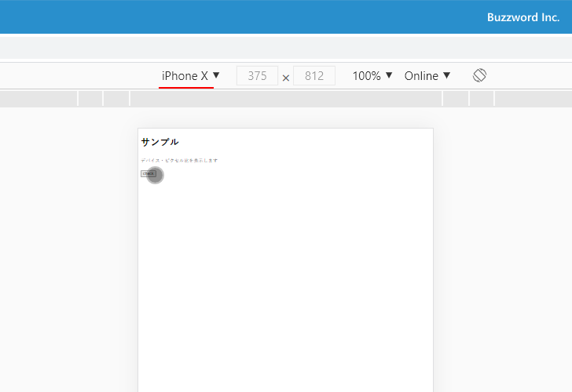

ディスプレイのデバイスピクセル比を取得する(window.devicePixelRatio)
windows.devicePixelRatio プロパティを参照すると、 Web ページを表示しているディスプレイのデバイスピクセル比を参照することができます。ここでは JavaScript を使ってディスプレイのデバイスピクセル比を取得する方法について解説します。
window.devicePixelRatioプロパティの使い方
window オブジェクトの devicePixelRatio プロパティを参照するとディスプレイのデバイスピクセル比を取得することができます。書式は次のとおりです。
window.devicePixelRatio
Windows を使った PC の環境では デバイスピクセル比は 1 ですが、 2021 年現在の iPhone や Android が搭載されたスマートフォンでは デバイスピクセル比が 2 や 3 の機種もあります。
実際の使い方はこのあとのサンプルコードをみてください。
デバイスピクセル比とは
デバイスピクセル比とは簡単にいうと、 CSS で表す 1 ピクセルを実際のデバイスでは何ピクセルを使って表現するかの比率です。
例えばデバイスピクセル比が 2 のディスプレイの場合、 Web ページに CSS の単位で幅 100 ピクセル、高さ 100 ピクセルの画像を表示しようとした場合、実際のデバイス上では 200 ピクセル × 200 ピクセルを使います。その為、画像のサイズが 100 ピクセル × 100 ピクセルの画像を使用すると、それを 200 ピクセル × 200 ピクセルに拡大して貼り付けられるため少しぼやけた感じで表示されてしまいます。
デバイスピクセル比が 2 のディスプレイで、 Web ページに CSS の単位で幅 100 ピクセル、高さ 100 ピクセルの画像を綺麗に表示するには、 200 ピクセル × 200 ピクセルのサイズの画像を用意する必要があります。
次のサンプルを見てください。
<!DOCTYPE html>
<html lang="ja">
<head>
<meta charset="UTF-8">
<title>サンプル</title>
</head>
<body>
<h1>サンプル</h1>
<p>デバイス・ピクセル比を表示します</p>
<input type="button" value="check" id="btnCheck">
<script>
let btnCheck = document.getElementById('btnCheck');
btnCheck.addEventListener('click', function(){
console.log(window.devicePixelRatio);
});
</script>
</body>
</html>
画面に表示されているボタンをクリックするとピクセルデバイス比がコンソールに出力されます。最初に Windows10 環境からの場合です。ピクセルデバイス比は 1 でした。
次に Google Chrome デベロッパーツールを使って端末をエミュレートした上で、同じページに表示しボタンをクリックしてみます。最初に iPhone6/7/8 に設定してからボタンをクリックします。
ピクセルデバイス比は 2 でした。
次に iPhone X に設定してからボタンをクリックします。

ピクセルデバイス比は 3 でした。
-- --
JavaScript を使ってディスプレイのデバイスピクセル比を取得する方法について解説しました。
( Written by Tatsuo Ikura )

著者 / TATSUO IKURA
初心者～中級者の方を対象としたプログラミング方法や開発環境の構築の解説を行うサイトの運営を行っています。